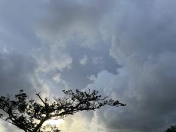
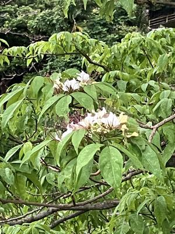
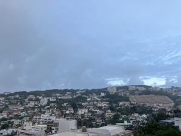

うるがいの話 ある日
最新: ギョボクの花【うるがいの話 ある日】とは 一日だけのプログです
『うるがいの話』の最新一日だけのプログで、通信料が少なく経済的だ。カニの画像をクリックすると全ての日付が載る『うるがいの話』サイトを表示します
|
|
【うるがいの話】 うるがい(ｳﾙｶﾞｲ urugai)とは、『もずくがに』の名前でとても大きくなります。 |
|---|---|
|
|
【カミマヤーの話】 猫のことを方言でマヤーといいます。カミマヤー（kamimayaa）とは、神の猫のことです。 |
|
【たながぁの音楽】 たながぁ（ﾀﾅｶﾞｰ tanagaa）とは手長えびのことで、何種類かあり大きいのは車 エビぐらいになります。 |

|
【ぶながぁの話】 ぶながぁ(ﾌﾞﾅｶﾞｰ bunagaa)とは、赤い髪の毛、赤い身体、そして身長は１ｍ２０ｃｍ ぐらい、川の蟹を食べているの目撃された。場所は沖縄県国頭郡大宜味村のと ある村僕の隣近所に住んでいる爺さんから、聞いた話です。 |
|
|
【ギーマの話】 ギーマ(giima)とは、山原の里山に咲くスズランに似た、 花を付けます。実は食べられます、 気が付くと口の周りが紫になっています。 |
2024年10月06日 (日）ギョボクの花
15:44

小雨が降る中、ギョボクの花を撮る。以前花の名前を調べたのだが、忘
れたのでネットで調べる。すると、『ツマベニチョウの幼虫は、食樹の
ギョボクで観察することができます。』とある。ホー、幼虫はないがツ
マベニチョウがとても多く乱舞しているのを見ることが出来る木なので
不思議だったが、納得である。
ツマベニチョウの育つ花ギョボク

きのうのジョギングも小雨が降った、がだ、こうもり傘をもっているの
で傘を広げる。
地獄坂１７時５５分 またもや、雨が降る（傘あり）

明日届く予定の、アマゾンで購入したルーターが昨日届いた（早い！）
朝３０分で設置完了、パソコンの２台とも非常に高速！。
１５時３３分 ビットコインの総資産 ￥２６、６９８（↓５２）